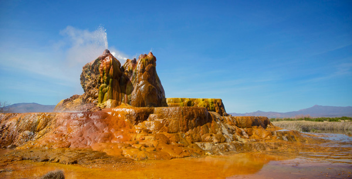

Fly Ranch is a roughly 3,800-acre parcel of land located 21 miles north of Gerlach, Nevada. The property has 640 acres of wetlands, dozens of natural spring-water pools ranging in temperature from hot to cold, sagebrush-grasslands, and a small area of playa that opens onto the Hualapai Flat. The land’s most prominent feature is the stunning Fly Geyser, a unique and iconic geothermal geyser that constantly releases water reaching five feet in the air, depositing minerals and multi-colored algae on the terraces surrounding it. The Fly Ranch property is truly an oasis in the desert.
The geyser itself is not entirely naturally occurring. It’s the result of some drilling done in 1964 in search of sources of geothermal energy. The well was likely not capped properly, which created the geyser. And why is it called “Fly” Ranch? Is there a bug problem? No. It’s believed the name in reference to flight. Accordingly to local Gerlachian lore, in the 1930s there was a biplane training facility on the property.
What we do know is this: Fly Ranch opens the door to new possibilities, new cultural experiments, and art and innovation projects on a scale never before envisioned. We also know that community participation will be essential. Fly Ranch will be a collaborative endeavor requiring a vast array of skills, ideas, and contributions.
Securing a year-round location for decades to come at Fly Ranch is the next step in the grand experiment that is Burning Man.
Check out the video below and read on for more information, including how you can get involved.